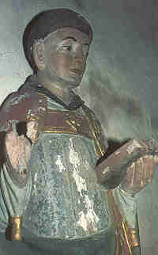
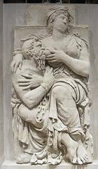
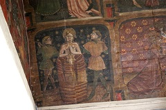
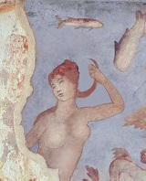
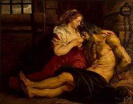
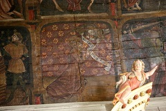
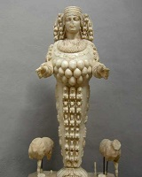
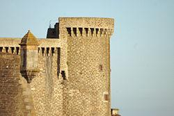

La Tour d'Armor
The Tower of Armor
Dialecte de Cornouaille
|
Cependant, ni Luzel, ni Joseph Loth (comme le remarque Francis Gourvil dans une note, p. 402 de son "La Villemarqué") ne rangent ce chant historique dans la catégorie des chants inventés . Par ailleurs, il existe une autre catégorie de gwerzioù collectées: - dans le Trégor par Luzel (2 versions, Plouaret 1863 et Locquirec 1867 ), par J-M. de Penguern (MS 93, fragment de 5 vers) et par Jules Gros (Trédrez, 1911, publié par Daniel Giraudon dans la revue "Planedenn"), ainsi que - dans le Léon par Miorcec de Kerdanet (Lesneven, avant 1837) et Gabriel Milin (même région). Dans ces ballades, le vieux roi de Brest malade, suivant l'avis "des prophètes" obtient d'être délivré d'un serpent qui le persécute, de sa fille, Enori , qui deviendra l'épouse d'un jeune prince. Elle sacrifie son sein qui est miraculeusement remplacé par un sein d'or. Une version publiée par Donatien Laurent dans "Mélanges offerts à Yves Le Gallo", 1987 (et chantée par Y-F Kemener dans le CD "An Dorn", 2004) se limite à cette histoire qui constitue le prologue des versions ci-dessus. Dans ces dernières, il est suivi des épisodes qui composent le présent chant: la calomnie de la marâtre, la condamnation au bûcher commuée en abandon à la mer dans un tonneau, la naissance de Budoc, les retrouvailles avec l'époux crédule torturé par le remords, la punition de la calomniatrice, l'invocation d'Enori comme patronne des marins. |
 Statue de Saint Budoc - Eglise de Gourin |
However, neither Luzel nor Joseph Loth (as stated by Francis Gourvil in a note on page 402 of his "La Villemarqué") includes this historical song on the list of the songs invented by La Villemarqué. Besides there is another class of laments collected - in Trégor by Luzel (2 versions, Plouaret 1863 and Locquirec 1867 ), by J.-M. de Penguern ( a fragment of 5 lines) and Jules Gros (Trédrez 1911, published by Daniel Giraudon in "Planedenn"), as well as - in Léon by Miorcec de Kerdanet (Lesneven, before 1837) and Gabriel Milin (in the same area). In these pieces, the sick old king of Brest is delivered, as "foretold by prophets", from a cruel snake which torments him without a respite, by his daughter Enori , a young prince's wife. She sacrifices her breast, which is miraculously replaced with a gold breast. A version published by Donatien Laurent in "Miscellanies dedicated to Yves Le Gallo", 1987 (and sung by Y-F Kemener on the CD "An Dorn", 2004) contains no more than this story, which is but the prologue to the longer aforementioned laments. There it is followed by the events which make up the song at hand: the bad mother-in-law's slander, sentence to death at the stake replaced by the barrel thrown into the sea, Budoc's birth in the barrel, reunion of the gullible but remorse-racked husband and his wife, punishment of the slanderous mother-in-law, Enori becomes a patron saint of seamen. |
Mélodie - Tune
(Mode hypophrygien).
| Français | English |
|---|---|
|
1.-Qui d'entre vous l'a vue là-haut, marins Sur la tour baignée par les flots; Au sommet de la Tour d'Armor, Armor Agenouillée, Dame Azénor? (1) 2. -Nous l'avons vue agenouillée, Seigneur, Dans la Tour, près de la croisée Le teint pâle et de noir vêtue, Cependant, calme et détendue. II 3. Des envoyés vinrent un jour, d'été, Du plus grand seigneur à l'entour, Livrées jaunes, harnais d'argent, Chevaux gris aux naseaux fumants. 4. Le guetteur qui les aperçoit, au loin, Vient aussitt trouver le roi - Douze hommes qui montent ici, Faudra-t-il leur ouvrir notre huis ? 5. - Ouvrez-leur les portes tout grand, guetteur- Qu'ils soient reçus gracieusement, Qu'une table leur soit dressée Recevons bien nos invités. 6. Le fils de notre roi voudrait, Seigneur, La main de votre fille aînée Ce serait pour lui un honneur, D'épouser la belle Azénor. 7. - J'y consens, qu'elle soit à lui, - ma fille,- Il est grand et beau, m'a-t-on dit; Ma fille aussi, de plus elle est, Douce et blanche comme du lait.- 8. L'évêque d'Is a célébré, gaiement La noce et quinze jours entiers; Ont duré danses et festins, Les harpistes à leurs lutrins. 9. - Douce épouse, voulez-vous donc, pour l'heure- Que chez moi nous retournions ? - Peu m'importe, mon jeune époux, Car j'irai partout avec vous.- 10. Sa belle-mère, qui la vit, venir, S'étrangla, étouffa d'envie: - Je crains qu'on ne fasse grand cas De la mijaurée que voilà! 11. On aime les clés nouvelles, - pardi !- Les vieilles clés on les dédaigne, Mais celles-ci le plus souvent Sont les plus commodes pourtant. - 12. Sept mois ne s'étaient pas passés, je crois, Qu'à son beau-fils elle disait: - Fils de Bretagne, voulez-vous, oui vous, Défendre la lune du loup? (2) 13. Prenez garde, si m'en croyez, - voyez,- Et si cela n'est déjà fait, Pour votre honneur méfiez-vous, c'est tout, Gardez votre nid du coucou! 14. "Si vous dites la vérité, Madame, Sur l'heure on va l'emprisonner. On la mettra dans le donjon; Dans trois jours nous la brûlerons!" III 15. Le vieux roi lorsqu'il entendit - ce bruit- D'amères larmes répandit Et il allait partout pleurant, Et arrachant ses cheveux blancs. 16. Le malheureux roi demandait - hélas !- Aux gens de mer qu'il rencontrait : - Marins, dites la vérité, la vraie: Ma bru, l'a-t-on déjà brûlée ? 17. -Non, elle ne l'est pas encore, Seigneur- Ce sera demain, dès l'aurore ; Elle est encore dans la tour, Hier soir, elle chantait toujours. 18. Hier soir, elle chantait toujours, Seigneur - D'une voix douce, un vrai velours : Elle disait "Pitié, mon Dieu, O Seigneur, ayez pitié d'eux! » IV 19. Azénor allait au bûcher, ce jour, Tranquille comme un agnelet, D'une robe blanche vêtue, Les cheveux épars et pieds nus. 20. Azénor allait au bûcher- pauvrette, Et petits et grands répétaient C'est un crime que la brûler Elle est sur le point d'accoucher!- 21. Petits et grands, tous sanglotaient, - en route - Tous, sa belle-mère exceptée : - Ce n'est pas pêcher mais bien faire, Qu'étouffer portée de vipère! 22. Soufflez, chauffeurs, soyez actifs - soufflez.- Que le feu prenne rouge et vif! - Soufflons, enfants, avec ardeur, Que le feu prenne avec ampleur; 23. Ils avaient beau souffler, souffler, en vain Sous elle le feu ne prenait; Souffler et s'essouffler encor; Le feu épargnait Azénor. 24. Quand le grand juge eut remarqué l'affaire Il en demeura stupéfait: Elle ensorcelle ce feu-là; Ne la brûlons pas, noyons-la!" V 25. Dis, qu'as-tu vu sur l'océan, marin? "Un bac sans rames ni gréement; (3) A la place du timonier, c'est vrai! Un ange aux ailes déployées!" 26. "J'ai vu, bien loin sur l'océan, Seigneur, Une mère avec son enfant (4) Nouveau-né tétant son sein blanc, Tel l'oiseau qui boit à l'étang." 27. Et couvrant de mille baisers, - baisers - L'enfant nu, elle lui chantait Dors, dors donc, dors donc à présent, Dors, dors, pauvre petit enfant! 28. S'il te voyait aussi ton père, - enfant,- Comme de toi il serait fier! Il ne te verra jamais plus, Car ton père, enfant, est perdu.- VI 29. Le château d'Armor est plongé, hélas - Dans l'effroi, il est atterré, On voit partout des gens courir: La belle-mère va mourir. 30. - Pitié, sauve-moi de l'enfer, - beau-fils, - Que je vois devant moi, ouvert ! Je suis damnée, je suis infâme! J'ai calomnié ta sainte femme! - 31. Elle n'avait pas achevé - qu'alors- Vint un serpent d'un dard armé. En sifflant vers elle il rampa; Il la piqua et l'étouffa. 32. Et son beau-fils, sans plus tarder, - s'en va- Et part en pays étranger, Il parcourt la terre et les mers, A la recherche d'Azénor. 33. Il l'avait cherchée au levant- sa femme - Il l'avait cherchée au couchant; Il l'avait cherchée au midi: Et au nord, il la cherche aussi. 34. En approchant de la Grande Ile, - alors,- (5) Il vit un enfant sur la rive, Qui amassait des coquillages, Dans sa robe, près du rivage, 35.Aux cheveux blonds et aux yeux bleus, si bleus Comme ceux d'Azénor, ces yeux, Si bien que du cœur du Breton S'éleva un soupir profond. 36. - Qui est ton père, mon garçon - dis-moi - - Dieu est mon seul père dit-on - L'autre est perdu depuis trois ans Ma mère pleure en y pensant. 37. Qui est ta mère? Est-elle là - enfant? - C'est la lavandière là-bas, Occupée à laver des draps. - Allons la trouver de ce pas.- 38. Il prend donc l'enfant par la main - le suit - Du lavoir il prend le chemin ; Et dans la main du fils le sang, Bouillait dans sa main en marchant. 39. - Ma chère mère, regardez, - voici :- Voici mon père retrouvé ! Mon père qu'on croyait perdu! Que Dieu mille fois soit béni !- 40. Mille fois ils bénirent Dieu, si bon,- Qui réunit les malheureux Ils rentrent au Pays breton. Dieu leur donne bénédiction! Notes ajoutées par La Villemarqué: (1) Az-enor= ré-honneur, honneur recouvré. (2) =coucher dehors, être chassé du domicile conjugal. (3 Le père Albert Le Grand parle d'un tonneau qu'on voulut mettre en perce à son arrivée en Irlande. (4) Saint Budok (ou Beuzek) dont le nom signifie "le noyé". (5) La Grande Bretagne ou l'Islande selon les "vitae" latines. |
1. - Did one of you perceive afar, sailors Atop the tower, next to the shore The round tower of Castle Armor, Armor , Kneeling, the Lady Azénor? (1) 2. - It was the Lady that we saw, my Lord On her knees at the tower's window, Her cheeks were wan, her gown dark green. Yet her heart was calm and serene. - II 3. Messengers came to us one day, in spring: The noblest blood from Brittany, Silver harness and golden clothes Grey chargers with ruddy noses. 4. As soon as the look-out saw them, coming, To warn the king he rushed down. - Riding up to us are twelve men. Shall the gate for them be open? 5. - I want the gate open to be, watchman, That they may be welcomed fairly. Quickly, let the table be laid Welcome is welcome, as I said. 6. - It's on behalf of our king's son, My Lord, That we ask for your daughter's hand. It would be for him an honour, To marry Princess Azénor. 7. - Her hand I shall give him freely, I'm sure, I know him grand and fair to be. My daughter is fair and grand, too, Soft like a bird, and fresh like dew. - 8. Married by the bishop of Is - with mirth, For a fortnight lasted the feast Two weeks of carousing and dance With harp music in abundance. 9. - Now, my fair wife, will you agree- won't you? To return to my house with me? - I do not mind, O my husband. I'll follow you to any land. - 10. When of her she got her first sight -the first, His stepmother has choked with spite: - No one will an occasion loose To pay homage to this young goose. 11. A new key is always welcome, alas! And the old one is deemed loathsome. And yet the old one is mostly Easier to use and handy. - 12. Full eight months had not yet elapsed, I think When her stepson she has addressed: - Does it fit a Breton scion, To fend off the wolves from the moon? (2) 13. You should take care, if you trust me, my son If that was not yet, that will be. Think of your fame, of your name, too! Guard your nest against the cuckoo. 14. - If your advice is a fair one, Lady, She shall be at once imprisoned Yes, imprisoned in the Tour Round And in three days she shall be burnt. - III 15. The old king, as soon as he hears - the noise Heart-broken dissolves into tears, Pulls the hairs off his hoary head, white head: - I'm too old to avert that dread! - 16. The old king asked and asked again, poor man! All the sea voyagers who came: - Voyagers, don't deny answer: Tell me, did they burn my daughter? 17. Your poor daughter is not burnt, no! Not yet! But she's sure to be tomorrow. She's still on top the round tower Yesternight she sang. I heard her. 18. Yesternight I have heard her sing, my Lord, A song that was calm and soothing: " O pity them, O pity them, Pity my God, do not condemn!" - IV 19. Azénor marched to the stake, next day, Carefree as a lamb, at daybreak, Her shift was white. Her feet were bare Down her shoulders flowed her fair hair. 20. Azenor marched to the stake, poor lass, And all, poor and mighty, did state: - This is the worst sin on the earth: To burn a lass near giving birth! - 21. All lamented, poor and mighty, who saw, Except her stepmother only: - This is no sin, but just rightful: Smothering a snake with its wombful! 22. - Work your bellows, fire attendants! Quickly! That the fire may blaze, red and dense! - Let our bellows blow, boys, hurry! The fire must take hold thoroughly! - 23. Blow as they would with their bellows, In vain! The stubborn fire refused to go: I blow, you blow, I blew, you blew, The fire scorned their busy ado. 24. The chief justice saw that he would, what plight! Not get over things as they stood: - Maybe she holds the fire spellbound. If she doesn't burn, she must drown! - V 25. - What did you see upon the main, sailor? - A craft with no oars and no sail. (3) Piloting it, on the stern side An angel, his wings open wide! 26. I saw a craft on the sea glide, My Lord, In it a woman and a child. (4) She hold the child to her white breast Like a dove near a conch to rest. 27. Its dear bare little back she kissed, she kissed, Her lullaby rang in the mist: "Toutouik lalla, my duckling, Toutouik lalla, my poor thing! 28. If only your father saw you, my son, He would be so proud of you, too! But, never shall he see his son. The hope to see him is forlorn." - VI 29. Castle Armor is upside down, its true! So upset was no house or town. In the castle this shrilly cry: "The step-mother's going to die!" 30. - Hell, to seize me, opens its door, stepson, In God's name, give your help once more! Help me once more, for I am damned! Your wife was pure I did attaint! - 31. No other word she could utter, behold! Out of her mouth a stinged viper, Hissing, slithered slowly along And smothered her, having her stung. 32. Her stepson left immediately. Away, Away, to travel far countries He travelled by land and by sea To hear of Azénor, maybe. 33. He sought for his wife to the East, the East And to the West as much at least.. To the South also he sought her He sought to the North thereafter. 34. When he landed on the Great Isle, he saw, (5) He saw on the shore a wee child That was playing along the surf Collecting sea shells in his shirt. 35. The boy's fair hair and blue eyes were, sea-blue, Spitting image of Azénor. And the Breton heard in his chest His heart beat and he felt oppressed. 36. - Who is your father, child, tell me, who's he? - I have, except God, nobody. Dad disappeared three years ago. Mother told me this tale of woe. 37. Who is your mother? Where is she, O child? -She's the washerwoman you see Over there washing tablecloths. - Let us go to her, both of us! - 38. And, hand in hand, they went again, straight on Until they came to a fountain: It was as though blood did ignite In the boy's hand that holds his tight. 39. - My dear mother, stand up and see, quickly: Here is my father, come by sea. My father who I thought was lost. God be praised! I found him at last. 40. God be praised who fills my desire, good God! Who sends back to a son his sire. - On them, who sail to Brittany The blessing of the Trinity! Notes appended by La Villemarqué: (1) Az-enor = re-honoured, restored honour. (2) = to be forced to sleep out (of the marital home). (3) Rev. Albert Le Grand mentions a barrel that people tried to tap when it was washed up to the Irish shore. (4) Saint Budok (or Beuzeg) whose name means "the drowned one". (5) Britain or Iceland according to the Latin "vitae". |
(Texte Breton Text)

|
Résumé par La Villemarqué
" Azénor eut pour père Audren, chef des Bretons Armoricains, fondateur supposé de la ville de Châtel-Audren, mort vers l'an 464, et pour fils Budok , que la tradition populaire a canonisé, comme sa mère. L'ancien bréviaire de Léon, dans l'office qu'il lui a consacré, fait naître le saint d'un comte de Goëlo. Il est très vénéré en Basse-Bretagne,...Les mariniers, dont il est le patron chantent sa légende...en se rendant au Pardon. Cette légende doit être très ancienne car elle a la forme rythmique de certaines pièces de Llywarch Hen , barde gallois du 6ème siècle, forme que n'offre, à ma connaissance, aucun autre poème armoricain. La strophe qui est de quatre vers octosyllabiques, rimant deux par deux, présente régulièrement à la fin du premier vers deux pieds de surérogation sans rime. Tout dans cette pièce, costumes, mœurs et usages, la langue même, çà et là, offre un caractère d'antiquité parfaitement en harmonie avec cette forme singulière." "Argument" du chant par La Villemarqué. En réalité, ce procédé se double de la répétition des deux dernières syllabes du troisième vers, pour épouser la mélodie. Les premier poème du fameux cycle d'anciens "englynion" gallois, "Canu Llywarch Hen" présente effectivement cette structure, mais les strophes sont de trois vers. (Equivalent breton en col.2):
Authenticité de cette gwerz Comme pour le chant La submersion d'Is , il est permis de se demander si La Villemarqué, lorsqu'il fait cette remarque, ne nous dévoile pas le modèle qu'il imite pour produire une poème de son cru. Il soulignait que "La pièce débute de la même manière que certains poèmes gallois antérieurs au dixième siècle, appelés "Englynion y clevel" (Chants de l’ouïe), parce qu’ils commencent toujours par les mots : "Ha glevaz-te?", "as-tu entendu?". Et, à propos d'Is, que penser de l'évocation de l'évêque d'Is à la strophe 8, tout droit sortie d'une gwerz que Luzel et Loth considèrent comme inventée? Par ailleurs cette histoire n'est pas dépourvue de "modernité": elle commence par deux strophes qui ne deviennent parfaitement compréhensibles qu'une fois qu'on est parvenu à la strophe 16. Quant à la relation équivoque entre le Prince et sa belle-mère, elle fait penser à l'intrigue du film de Mike Nichols "Le Lauréat" (avec Dustin Hoffman et Anne Bancroft). A ce soupçon de fraude, on peut objecter, entre autres, que la mélodie du Barzhaz, unique elle aussi, ressemble fort à une authentique berceuse populaire. Elle accueille tout naturellement, à la strophe 27, la formule traditionnelle qui endort les enfants bretons: "Toutouik-lalla, va mabig/ Toutouik-lalla 'ta, paourig!" De même, le dicton "Diwall al loar diouzh ar bleiz" (st. 12), "Protéger la lune du loup", que La Villemarqué interprète comme "coucher dehors, être chassé du domicile conjugal" ne peut avoir qu'une origine populaire. Donatien Laurent explique cette curieuse expression comme une allusion, selon l'ancien calendrier gaulois à l'omission d'un mois intercalaire au début de chaque "lustre" de trente ans. Il ne semble donc pas improbable que La Villemarqué ait brodé sur le canevas fourni par un ou plusieurs chants recueillis dans la tradition pour en faire un "englyn" conforme au modèle de la poésie galloise. Madame de Ponker La publication en ligne, en novembre 2018, du 2ème carnet de Keransquer, donne la teneur du chant An Itron Ponker dont on connaissait l'existence grâce à la Table B des chanteurs du Barzhaz, préparée par Mme de La Villemarqué à l'intention de son fils en vue de l'édition de 1845. Ce chant a une stucture tout à fait similaire au présent cantique en dépit de l'affirmation du Barde de Nizon selon laquelle il revêt une "forme que n'offre, à ma connaissance, aucun autre poème armoricain" . En se reportant audit chant, on trouvera les raisons qui conduisent à conjecturer que la présente "Tour d'Arvor" a emprunté à cette gwerz sa structure (quatrains d'octosyllabes prolongés, une fois sur deux, de 2 pieds de "surérogation") et, vraisemblablement, sa belle mélodie. Sainte Hénori ou Azénor  Comme mentionné dans la notice bibliographique ci-dessus, F-M. Luzel et d'autres collecteurs ont recueilli une autre version de cette légende où la sainte est appelée Hénori ou Enori .Chroniques religieuses Le lendemain, il demande à son beau-père quel châtiment doit subir une reine adultère. "Qu'elle soit brûlée, répond le roi de Brest". Azénor parvient à faire commuer la peine en alléguant qu'elle est enceinte de quatre mois et qu'il faut attendre la naissance de l'enfant innocent pour le baptiser. Bréviaires de Léon et de Dol Une quinzaine de Bréviaires furent en effet composés aux XVème et XVIème siècles dans divers diocèses de Bretagne à partir des "Vitae" antérieures en y apportant des modifications caractéristiques: simplification du latin carolingien des Vitae et raccourcissement de la narration pour qu'on puisse soit la psalmodier au chœur, soit la lire dans les cellules ou au réfectoire... Comme l'indique B. Merdrignac dans L'espace et le sacré dans les ...bréviaires...armoricains les coupes portent surtout "sur les récits qui localisent la dévotion des fidèles et [où affleurent] des tensions entre culture 'folklorique' et culture 'cléricale'". L'auteur cite l'origine des Troménies ; l'élection pontificale de saints celtes lors d'un pèlerinage à Rome (les pérégrinations échappent au contrôle des autorités ecclésiastiques). Certains passages des "Vitae" ne sont pas éliminés mais modifiés: il en est ainsi de ceux relatifs aux croix érigées dans des circonstances qui pourraient évoquer le culte des arbres; et aux dragons tutélaires terrassés par un saint: symbole à l'origine, de la mainmise d'une communauté religieuse, en particulier monastique sur un territoire donné, le récit est moralisé et le pauvre dragon ne symbolise plus que le mal... Au terme d'une analyse d'une grande finesse, l'auteur conclut que les Bréviaires substituaient à la conception globale des "Vitae" une vision hiérarchisée de l'espace: le "loc"(us) où vit l'ermite, en contact avec l'extérieur, s'interpose entre le monde sauvage et l'espace civilisé; et entre le monde laïque et le cloître où se retire le moine. Ces textes opposent, à l'usage exclusif des clercs, espace sacré et monde profane. Dans le cas des bréviaires de Léon et de Dol c'est l'épisode du serpent et du sein d'or qui est ignoré. Le bréviaire du Léon commence ainsi:
La chapelle ND du Tertre à Châtelaudren  L'examen, au paragraphe suivant, des variantes de la gwerz d'Enori et celui des textes ci-dessus qui ont pu l'inspirer, montrent que La Villemarqué est le seul à faire d'Audren, fondateur supposé de Châtelaudren (à côté de Saint-Brieuc), le père d'Azénor, alors que les autres sources la disent fille du "roi de Léon". La Villemarqué justifie ce choix dans la "Note" qui fait suite au poème:A l'évidence, le Barde n'a pas vu la chapelle en question dont les lambris ont été peints, si l'on en juge par les costumes représentés, entre 1350 et 1450 pour le chœur et vers 1480 pour la chapelle Sainte-Marguerite: en effet, sa description correspond non pas à un, mais à deux tableaux (cf. les 2 illustrations du présent paragraphe). Dans La fiancée de Satan , il commet une erreur du même genre quand il invente un "Pierre d'Izelvet". Cette fresque étonnante constituée de 138 tableaux évoque: dans le chœur: - l'Ancien et le Nouveau Testament (96 tableaux); et dans la chapelle Sainte Marguerite: - l'histoire de Marie-Madeleine (6 tableaux, tympan nord); - la légende de Saint Fiacre (18 tableaux, voûte) et - la légende de Sainte Marguerite d'Antioche (18 tableaux, 2ème moitié de la voûte), C'est à cette dernière série qu'appartient le double tableau que La Villemarqué suppose à tort représenter Azénor. Fille d’un prêtre païen, élevée clandestinement dans la foi chrétienne par sa nourrice, Marguerite a suscité la convoitise du gouverneur des Gaules, le bien-nommé Olybrius, mais a refusé ses avances. Ce dernier s’est alors mis à la tourmenter. La sainte subit nombre de mésaventures: avalée par un dragon, elle se sauve en lui ouvrant le ventre avec une croix (ce qui la prédestine à assister les femmes en couches); torturée elle sort indemne d’un tonneau où elle avait été immergée . Avant de mourir décapitée, elle a prié Dieu d’accorder un accouchement facile aux femmes qui l’invoqueraient . L'ange à la banderole lui apprend que le message a bien été reçu, par la formule consacrée que cite la chronique de Saint-Brieuc. La gwerz Pontplaincoat qui traite des accouchements difficiles fait une de place de choix à Sainte Marguerite dont la malheureuse héroïne porte le nom. Cette merveilleuse chapelle est injustement méconnue: le guide Michelin ne lui adjuge qu'une seule étoile et ne mentionne que les 96 tableaux du chœur. Le guide Gallimard des Côtes d'Armor est plus généreux: il consacre à ce prodigieux édifice une trentaine de lignes et deux pleines pages de photos. Pourtant l'inspecteur des monuments historiques Jules Geslin de Bourgogne (1812-1877) écrivait en 1849 qu'il s'agissait "d'une des plus grandes pages laissées par le 15è siècle non seulement à la Bretagne, mais à la France toute entière". Ces peintures furent restaurées une première fois en 1851-1852, puis en 1960-1964. Variations sur un thème Dans son dictionnaire franco-breton de 1732, le père Grégoire de Rostrenen mettait en garde contre cette confusion: à l'article "Honorée", il indique: "Il y en a qui confondent mal-à-propos Sainte-Honorée, femme de Saint-Efflam et Sainte Azénor ou Eléonore". Ceci dit "Henori", chez lui, non seulement traduit "Honorée", mais est aussi donné comme équivalent d'"Azénor", ce que les gwerzioù confirment. En revanche, présenter "Azénor" comme une variante d'"Eléonore" est discutable. Le "Dictionnaire encyclopédique des prénoms" de J. et J. Vasseur, (Athéna et Idégraf, 1987) qui ignore "Azénor", voit en "Eléonore" un dérivé provençal d'"Hélène". Ce changement du nom de l'héroïne n'est qu'une des nombreuses variations que l'on observe dans les gwerzioù: Parfois même, elle donne à son père le choix : "Kemerit anezhe o-div, mar karit" (Prenez les deux si vous voulez!) Dans une version citée par Kerdanet, elle lui demande d' aiguiser ses rasoirs pour abréger sa souffrance (Na lemmit lemm ho aotennoù/ Ma'z int buannoc'h sur ar poanioù). - tantôt le roi s'agenouille devant sa fille, à la demande de celle-ci: "It-c'hwi war pennoù ho taoulin", - tantôt cette humiliation lui est épargnée au moyen d'un tabouret , et c'est la fille qui s'agenouille: "Kemerit skabell, azezit!/... Ma 'z a Enori d'an daoulin". - Tantôt le serpent mord le sein: "He bronn gant 'r sarpant 'zo dantet "; - Tantôt il l' arrache : "Ha bronn Enori 'n-deus troc'het ". - Souvent Enori se lamente et son père, seul, la console : "Ema Enori 'n he gouele/ Ne gave den he c'hoñsolje/ 'Met he zad, hennezh a rae" (Il s'agit là d'un cliché que l'on retrouve dans d'innombrables gwerzioù). - Ces consolations sont accompagnées de la promesse d'un beau mariage qui parfois suit le miracle du sein d'or, au lieu de le précéder: "Pa vuiot yac'h, m'ho timezo/ Da vravañ baron zo er vro" (Quand vous serez guérie, je vous marierai/ Au plus beau baron du pays). M'am-be ur vronn w erc'h , 'm-be y ec'h et (si j'avais un sein de vierge, j'aurais la santé) Les syllabes en caractères gras sont des rimes internes (l'avant-dernière syllabe rime avec la syllabe placée avant la césure), selon un système qui a été en honneur jusqu'en 1650. L'archétype de ce chant devrait donc être antérieur à cette date. A partir d'ici le récit des différentes gwerzioù collectées rejoint celui du Barzhaz, sans toutefois en avoir la poétique beauté. Caradoc de Vannes Appartenant à la "matière de Bretagne", la Première continuation du Conte du Graal (tel qu'il figure dans le Perceval de Chrétien de Troyes, mort vers 1195), encore appelée "Continuation Gauvain" ou "le Livre de Caradoc", datant de la fin du 12ème siècle, met en scène le personnage féminin de Guignier qui ressemble fort à Azénor, hormis la sainteté. On peut la résumer ainsi: - Caradoc père, roi de Vannes, épouse Isaive de Carhaix, mais Caradoc fils a été conçu par le magicien Eliavrès, tandis que le roi honorait à son insu une levrette, une laie et une jument auxquelles son rival avait donné l'aspect d'Isaive. - Le jour où il est fait chevalier, à la cour d'Arthur, Caradoc fils coupe la tête d'un nouveau venu, à la demande de ce dernier. Au bout d'un an l'inconnu revient, mais au lieu de décapiter à son tour Caradoc, comme convenu, il lui révèle qu'il est son vrai père. (Ce genre d'histoire n'est pas isolé dans la littérature celtique: cf. Lez-Breizh, L'ermite du Barzhaz). - Le roi de Vannes, apprenant l'infidélité de sa femme, l'enferme dans une tour. Elle y reçoit des visites d'Eliavrès qui, une nuit, est surpris par Caradoc. Le roi oblige le magicien à engendrer avec les partenaires adéquates, trois animaux fantastiques: le lévrier Guinolac, le sanglier Tortain (cf. breton "tourc'h"=verrat) et le poulain Loriagort. - Pour se venger de son fils, Isaive, lui demande de prendre un peigne ou un miroir dans une armoire où Eliavrès avait placé un horrible serpent qui se fixe au bras de Caradoc et commence à lui soutirer la vie: il mourra dans les deux ans qui suivent. - Elle est contrainte par Cador, l'ami de Caradoc, de révéler un remède que lui a confié son amant. Caradoc entre dans un baquet plein de vinaigre, à côté duquel dans un autre baquet plein de lait se tient une vierge au sein nu: Guignier. Le serpent abandonne le bras pour le sein. Caradoc lui tranche la tête, mais hélas, il tranche aussi le sein. - A la mort de son père auquel il succède, Caradoc épouse Guignier (qu'il avait jadis secourue contre un soupirant qui avait blessé Cador et le frère de la jeune fille). Son bras s'était raccourci d'où le surnom de "Briébras" (bras bref) qu'on donna au jeune roi. - On offre à Caradoc une boucle d'écu d'or qui remplace le sein mutilé de sa femme à qui il conseille de ne parler à personne de cette prothèse...On peut supposer que l'histoire inachevée aurait dû rejoindre celle d'Azénor, si ce n'est que le mari de l'épouse calomniée, Caradoc connaissait le secret du sein d'or et que le prince de Goëlo l'ignorait. - Le texte se termine par une épreuve de fidélité dont Guignier triomphe, car Caradoc, contrairement à Arthur, parvient à boire à une corne sans répandre une goutte, excitant la haine de Guenièvre. Autres réminiscences littéraires Une seule d'entre elles réussit à revêtir le manteau, lequel, cependant, avait commencé par "se froisser et s'étirer". Le récit se poursuit ainsi: Et ne me fais pas honte pour rien! Une fois j'ai manqué aux convenances, Je n'en fais pas mystère: Quand j'embrassai Craddocke sur la bouche Dessous un arbre vert, Quand j'embrassai Craddocke sur la bouche Avant qu'il ne m'épouse.’ Bien entendu, "Craddocke" n'est autre que "Caradoc". Ce chant est une variation en langue anglaise sur le thème du "Lai du corn" (de la corne) de Robert Bikez (12ème ou 13ème siècle), combiné avec celui du "Fabliau du mantel mau-taillé" (mal taillé) dit aussi du "Cort Mantel" (court manteau) (2ème moitié du 13ème siècle). Robert Bikez nous apprend qu'il tient cette histoire d'un abbé, et qu'elle n'était qu'un chaînon dans une longue tradition de récit où interviennent des talismans capables de dénoncer l'inconstance de la gent féminine. Les trois objets cités dans la ballade anglaise sont, affirment les Gallois (sous la plume de Jones dans son "Musée Bardique") les insignes de l'ancienne Grande Bretagne et l'apanage de Tegeu Eurfron, la femme de Caradawc dont il sera question plus loin. Les références galloises et bretonnes ont certainement un lien réciproque ou une origine commune, sans qu'il soit possible d'établir entre elles avec certitude une relation d'antériorité. Il est amusant de constater que le brittonique "Karadog Brec'h-vras" ou "Caradawc Freichfras" a pu donner en français "Caradoc Bref-Bras" du fait que dans la langue d'origine "bras" signifie grand (et "brec'h/brech" signifie "bras"). La même cause (étreinte du serpent) produit des effets contraires (allongement ou raccourcissement du bras) en passant d'une langue à l'autre... L'étude de Gwennole Le Menn  Un développement intéressant est consacré au nom de "Guignier" , celui de l'héroïne dans le récit de Caradoc. On le retrouve en gallois dans des Triades sous la forme "Gwiner". En Bretagne, la paroisse de Pluvigner (au nord d'Auray) a pour patron saint Guigner, qui donne également son nom à une chapelle de la cathédrale de Vannes. Or Caradoc était roi de Vannes.A Langon, entre Rennes et Redon, il existe une chapelle d'origine gallo-romaine aujourd'hui dédiée à Sainte Agathe et dont l'ancien vocable, encore mentionné dans les registres paroissiaux de 1674, était saint Vénier ("Ecclesia sancti Veneris" dans le Cartulaire de Redon datant de 838). Sainte Agathe était vénérée par les femmes désireuses d'avoir du lait. La "Légende dorée" raconte que ses seins lui furent arrachés par ses bourreaux, puis restitués par saint Pierre qui lui rendit visite dans sa prison. Au début du 19ème siècle, on découvrit sous le badigeon qui recouvrait l'abside de la chapelle de Langon une fresque montrant une femme nue accompagnée d'un enfant et d'animaux marins. On peut y reconnaître Vénus . Or, en breton, Vénus se dit "Gwener"et? "Digwener", tout comme "Vendredi" (du latin "Veneris dies") est le jour de la semaine qui porte le nom de cette planète. Guignier et Vénus ne seraient-elles pas une seule et même personne? On peut en douter. En revanche, l' étymologie d'Azénor (=honneur recouvré) proposée par La Villemarqué est confirmée au terme d'une discussion de près de quatre pages! Remarque finale Une version très proche de celle de Luzel, mais limitée à l'épisode du serpent et du sein coupé, a été enregistrée par Yann-Fañch Kemener . La source indiquée est Donatien Laurent. Mélanges offerts à Yves Le Gallo. |
Résumé by La Villemarqué
" Azénor was the daughter of a Breton chieftain, Audren, who is supposed to have founded the town Châtelaudren and to have died in 464. Tradition made of her son, Budok , a saint, as it did of her. An old mass book of Léon assigns to him as his father a Count of Goëlo. He is very popular among sailors who sing this hymn every year when repairing to his Pardon. This hymn must be very old since it has the same rhythmic schema as some poems by the 6th century Welsh bard Llywarch-Hen . To the best of my knowledge, this form is found in no other Breton poem. The verse consists of four 8-syllable lines, rhyming two-by-two, whose first line is prolonged by a not rhyming trailer of two syllables. Everything in this piece, clothes, manners and customs, even the language, now and then, hint at an antiquity in accordance with this old form" "Argument" to the song, by La Villemarqué. In fact, this process is combined with repetition of the last two syllables in the third line, so as to get it to scan when the tune is sung. The first poem in the famous cycle of early Welsh "englynion", "Canu Llywarch Hen" really has this structure, though the stanzas have only three lines:
Authenticity of the Barzhaz gwerz As in the case of the song The flooding of Is town , we may here wonder if La Villemarqué, with this remark, is not unveiling the model he followed for a composition of his own. He pointed out that the first line of the Breton ballad "Ha glevaz-te? Did you hear?" was equivalent "to a favourite introduction in Welsh poetry: Y glyweis-ti?" And, since we are speaking of Is, how could we not look askance at this "bishop of Is" in stanza 8, relating to a gwerz dismissed as a fake by both Luzel and Loth? Besides, there are in this poem puzzling "modern" features, for instance its beginning with two verses that are fully understandable to the reader, only when he has reached the 16th verse. And does not the dubious relationship between the prince and his stepmother recall the plot of the Mike Nichols film "the Graduate" (with Dustin Hoffman and Anne Bancroft)? We may disprove this allegation of fraud: among others, the tune recorded in the Barzhaz and nowhere else sounds like a genuine folk lullaby containing in its 27th stanza the traditional onomatopoeia apt to send to sleep Breton babies: "Toutouik-lalla, va mabig/ Toutouik-lalla 'ta, paourig!" Similarly, the saying "Diwall al loar diouzh ar bleiz" (st. 12), "To fend off the wolves from the moon", interpreted by La Villemarqué as meaning "to be forced to sleep out of the marital home" hints at a popular origin. Donatien Laurent explains this strange expression as derived from the ancient Celtic calendar with the initial month falling off at the beginning of each thirty year "century". Therefore it seems reasonable to assume that La Villemarqué elaborated on one or more existing traditional songs which he adapted to the "englyn" model of Welsh poetry. Madame de Ponker The online publication, in November 2018, of the second Keransquer notebook, gives the content of the song An Itron Ponker which we knew existed thanks to Table B of the Barzhaz singers, prepared by Mme de La Villemarqué for her son on the occasion of the 1845 edition of the Barzhaz. This song has a structure quite similar to the present hymn despite the Bard of Nizon's assertion that it takes a "form which, to the best of my knowledge, is presented by no other Armorican poem ". On the page dedicated to said song, we will find reasons to conjecture that the present "Tour d'Arvor" has borrowed from this gwerz not only its structure (quatrains of octosyllables ptolonged, once in two, by a 2 feet "extension"), but also, presumably, its haunting melody. Saint Henori or Saint Azénor  As mentioned in the above bibliographic notice, F-M; Luzel and other scholars collected a different version of this tale where the holy woman's name is Hénori or Enori .Religious chronicles Breviaries of Leon and Dol A score of Breviaries were composed in the 15th and 16th centuries in several bishoprics of Brittany, based on previous "Vitae" whose contents were modified in certain characteristic ways: simplification of the Latin used by the Carolingian authors of the Vitae and shortening of the narrative to allow it to be either chanted in chorus, or read in the cells or in the refectory... As stated by B. Merdrignac in Space and the sacred in ... Armorican ... ...breviaries , the cut passages are above all "narratives which localize places of worship and [hint at] conflicts between 'folklore' and 'clerical' culture". Among other instances quoted by the author: the origin of the "Troménies" and the appointment as popes of Celtic saints come on pilgrimage to Rome (pilgrimages are beyond the control of Church authorities). Some passages in the "Vitae" are not scratched out, but modified: for instance those relating to crosses erected under circumstances that could hint at a cult of trees; or those evoking tutelary dragons defeated by a saint: these narratives, formerly symbolizing the seizure of an area of land by a religious community, especially by monks, are given moral import and the unfortunate dragons are degraded to become symbols of evil... At the outcome of a very pertinent analysis, the author comes to the conclusion that those Breviaries replaced the all-encompassing view of space embodied in the "Vitae" with a hierarchized one: the "loc"(us) where the eremite dwells keeping in touch with the outer world, makes a transition between the wild world and the cultured world; and between the world and the cloister where the monk has withdrawn from it. They contrast, for the sole benefit of clerics, sacred space and mundane world. In the specific case of the Breviaries of Léon and Dol, it is the serpent and gold breast legend that is skipped. The Léon Breviary begins thus:
The ND du Tertre chapel in Châtelaudren  A close examination of the below variants to the "gwerz of Enori" and of the above texts on which they may draw, show that nowhere, except in La Villemarqué's poem, is Audren, the alleged eponymous founder of Châtelaudren (near Saint-Brieuc), called the father of Azénor. Nearly all other sources assert that she is daughter to the "king of Léon". La Villemarqué explains his choice in the "Note" appended to the poem:Evidently, the Bard of Nizon had not seen this church whose panellings were painted, judging from the garb of the figures, between 1350 and 1450 in the choir, and around 1480 in the Saint-Margaret chapel, since his description does not refer to one but to two pictures. (see the 2 illustrations to the present paragraph) In Satan's bride , he makes a similar mistake when he devises a "Peter of Izelvet". This astounding fresco made up of 138 pictures evokes: in the choir: - the Old and the New Testament (96 pictures); and in the Saint Margaret chapel: - the story of Mary-Magdalene (6 pictures, northern tympanum); - the legend of Saint Fiacre (18 pictures, vault) and - the legend of Saint Margaret of Antioch (18 pictures, 2nd half of the vault), To the last-named series belong the two adjoining pictures which La Villemarqué erroneously links to Azénor. Margaret was the beautiful daughter of a pagan priest, secretly converted by her nurse to the Christian faith. She aroused the lust of the governor of the Roman diocese of the East, Olybrius, but she repelled him. Therefore he ordered that she would be cruelly tortured. Whereby miraculous incidents occurred: she was swallowed by a dragon, from which she escaped by opening the beast's stomach with the cross she carried (which qualified her as helper of pregnant women); she also emerged unscathed from a barrel into which she had been plunged alive . Before she died, beheaded, she prayed to God that He might ease childbirth pains for pregnant women invoking her . The angel with the banderole let her know that her request was accepted, using the same expression sanctioned by use, as in the Saint-Brieuc chronicle. The Pontplaincoat gwerz about caesarean deliveries features prominently Saint Margaret who also lends her name to the unfortunate protagonist. This wonderful chapel is unjustly ignored: the Michelin guidebook grants it only one star and mentions only the 96 pictures in the choir. The Gallimard guidebook of "Côtes d'Armor" is a little bit more generous: it dedicates to this prodigious church roughly thirty lines along with a two page photo of the vault. And yet the Inspector of Historical Monuments Jules Geslin de Bourgogne (1812-1877) wrote in 1849 that this was "one of the greatest pages bequeathed by the 15th century not only to Brittany, but also to the whole French nation". These paintings were restored first in 1851-1852, then in 1960-1964. Variations on a theme He considers that "Henori" not only translates as "Honorée", but also is equivalent to "Azénor", which is confirmed by sevral gwerzioù. But, that "Azénor" could be a variant to "Eleonore" is questionable. The "Encyclopedic Dictionary of Christian Names" by J. and J. Vasseur, (Athéna & Idégraf, 1987) which does not know of "Azénor", sees in "Eleonore" a Provençal equivalent to "Helen". This changed name of the female protagonist is only one of the variations of the same theme embodied in several gwerzioù: Sometimes she even suggests: "Kemerit anezhe o-div, mar karit" ( Take both if you want!) In a version quoted by Kerdanet, she asks him to sharpen his razors , so as to cut short her pain (Na lemmit lemm ho aotennoù/ Ma'z int buannoc'h sur ar poanioù). - the king kneels down before his daughter, at her request: "It-c'hwi war pennoù ho taoulin", - in other versions this humiliation is spared him by means of a stool , and the daughter kneels down: "Kemerit skabell, azezit!/... Ma 'z a Enori d'an daoulin". - Now the serpent bites the breast: "He bronn gant 'r sarpant 'zo dantet "; - Now it tears it off : "Ha bronn Enori 'n-deus troc'het ". - Often Enori laments and her father is the only person who gives her solace : "Ema Enori 'n he gouele/ Ne gave den he c'hoñsolje/ 'Met he zad, hennezh a rae" (This is a standard sentence which occurs in a great many gwerzioù). - These words of comfort include the promise of a marriage with a prominent husband, which is made either before or immediately after the gold breast miracle: "Pa vuiot yac'h, m'ho timezo/ Da vravañ baron zo er vro" (As soon as you are healed, I'll marry you/ To the handsomest baron of this country). M'am-be ur vronn w erc'h , 'm-be y ec'h et (if I had a virgin breast I would be healed). The syllables in bold characters are "internal rhymes" (the last syllable but one rhymes with the syllable preceding the caesura), an intricate device in use until 1650. We may therefore infer that the archetype for this ballad was composed before this date. From here on, the narratives in the collected gwerzioù converge with that in the Barzhaz, but for its poetic beauty. Caradoc of Vannes In a book belonging to the "Matter of Britain", "the First continuation of the Tale of Grail", also known as "Sir Gawain Continuation" , there is a long chapter titled "The Book of Caradoc" dating from the late 12th century, featuring a girl, Guignier who is very much like Azénor but for the saintliness. It sums up as follows: - Old Caradoc, king of Vannes, wedded Lady Isave of Carhaix, but Caradoc Jr was sired by the enchanter Eliavrès, while the king, without his knowing it, lay for three nights with a greyhound bitch, a wild sow and a mare that were given by his rival the appearance of Isave. - The very day he was knighted at Arthur's court, Caradoc Jr cut off the head of a newcomer at the latter's request. A year passed by and the unknown knight came back, but instead of beheading Caradoc in turn, as agreed upon, he revealed to him that he was his true father. (That kind of tale occurs now and then in Celtic literature: see Lez-Breizh, The hermit in the Barzhaz). - The king of Vannes, when he heard of his wife's unfaithfulness, locked her up in a tower. But Eliavrès forced his entry into her prison and was surprised, one night, by Caradoc Jr. The old king compelled the enchanter to beget with adequate partners three fantastic animals: the greyhound Guinolac, the boar Tortain ( Breton "tourc'h"=boar) and the foal Loriagort. - To take revenge on her son, Isave asked him to take a comb or a mirror from a cabinet where Eliavrès had hidden a horrid snake that clung to Caradoc's arm and started sucking the life from it: he was to die within the two next years. - She was forced by Cador, Caradoc's friend, to reveal the remedy entrusted to her by her lover. Caradoc enters a tub filled with vinegar. Next to it, in another tub full of milk, stands a bare-breasted virgin: Guignier. The snake gives up the arm and jumps onto her breast. Caradoc cuts off its head, but, unfortunately, he also severs the tip of the breast. - After the death of his father whom he succeeded as king, Caradoc married Guignier (whom he had formerly succoured against a suitor who had injured Cador and the girl's brother). His arm had shrunk, hence the nickname "Briébras" (Short arm) that was given the young king. - Caradoc receives as a gift a magic gold shield navel that he adapts onto the mutilated breast of his wife whom he entreats never to mention this prosthesis...We may infer that the uncompleted story was to converge with the tale of Azénor, except that the husband of the slandered wife, Caradoc, knew of the secret about the gold breast, which was unknown to the prince of Goëlo. - The narrative ends up with a test of faithfulness to which Guignier stands, since Caradoc, unlike Arthur, succeeds in drinking from a horn without spilling a drop, thus bringing on herself Arthur's wife Guinevere's hatred. Other literary links Only one lady can wear the mantel, which, however, had begun to "crinkle and crawl". The tales goes on: and shame me not for nought! ‘Once I did amisse, I tell you certainlye, When I kist Craddockes mouth vnder a greene tree, When I kist Craddockes mouth before he marryed mee.’ Of course, "Craddocke" is for "Caradoc". This song is an English variation of theme of the "Lai du corn" by Robert Bikez (12th or 13th century), combined with the "Fabliau du mantel mau-taillé" or "Cort Mantel" (2nd half of the 13th century). Robert Bikez tells us that he learned his story from an abbot who was but a link in a long chain of tradition featuring talismans apt to expose female unfaithfulness. All three of those quoted in the English song are claimed by the Welsh (in Jones' "Bardic Museum") as the insignia of Ancient Britain and the special property of the below mentioned Tegeu Eurfron, Caradawc's wife. Those Welsh and Breton references are certainly mutually linked or have a common origin. However definitely deciding which tales precede the others seems to be impossible. It is funny that the Brittonic "Karadog Brec'h-vras" or "Caradawc Freich-fras" could translate in French as "Caradoc Bref-Bras", because, in the original language "bras" (here mutating to "vras") means "big" (while "brec'h/ brech" means "arm"). The same cause (constriction of a snake) has contrary effects (arm lengthening or shortening), depending from the language in use... A study by Gwennole Le Menn  An interesting study is devoted to the name "Guignier" , by which the heroic girl goes in the tale of Caradoc. The Welsh form appears in some Triads as "Gwiner". In Brittany, the parish Pluvigner (north of Auray) is named after its patron, the holy man saint Guignier, as is a chapel in the cathedral of Vannes. As we know, Caradoc was king of Vannes.At Langon, between Rennes and Redon, stands a chapel of Gallo-Roman origin, now consecrated to Saint Agatha , whose former dedication, still mentioned in parish records from 1674, was to Saint Vénier ("Ecclesia sancti Veneris" in the Redon Cartulary dating to 838). Saint Agatha was especially honoured by women who wanted to increase their supply of breast milk. According to the "Golden Legend" her breasts were severed by her torturers, and then wonderfully restored by Saint Peter who visited her in her prison. Early in the 19th century, under the whitewash covering the apse of the Langon chapel, an ancient fresco was disclosed showing a naked woman, a child and several sea animals. We may recognize in the woman the goddess Venus . Now, the Breton word for Venus is "Gwener" and "Digwener", as is the French "Vendredi" (Latin "Veneris dies"), is the day of the week named after this planet (English: Friday). Are Guignier and Venus one and the same person? We may doubt it. But, the etymology of Azénor (=recovered honour), set forth by La Villemarqué, is confirmed after a long discussion encompassing nearly four pages! Final remark A version very similar to the Luzel one, but limited to the serpent-and-cut-breast episode was recorded by Yann-Fañch Kemener . The source is indicated as "Donatien Laurent - a miscellany offered to Yves Gallo". |

Tour Azénor à Brest